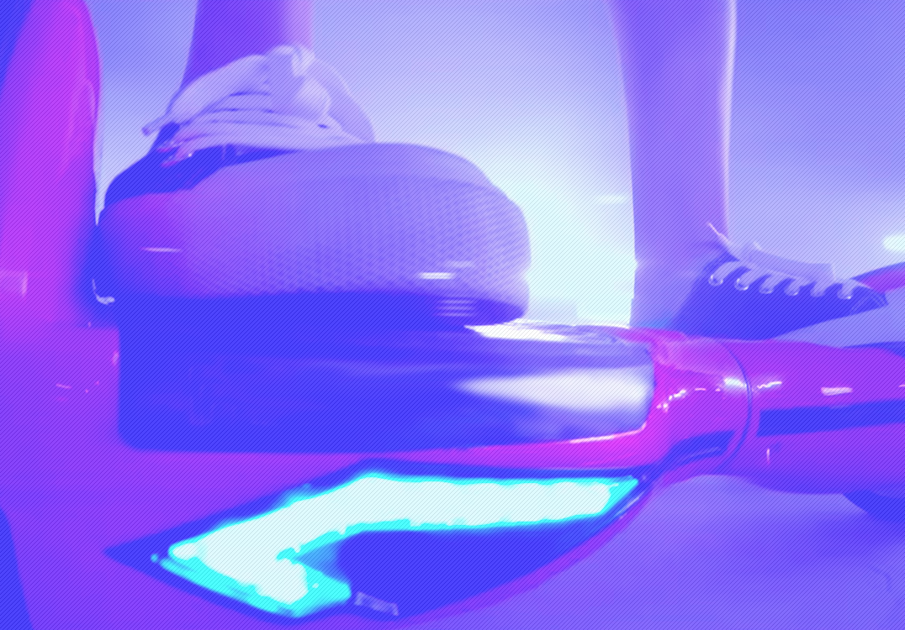
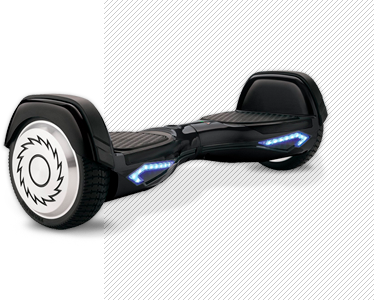
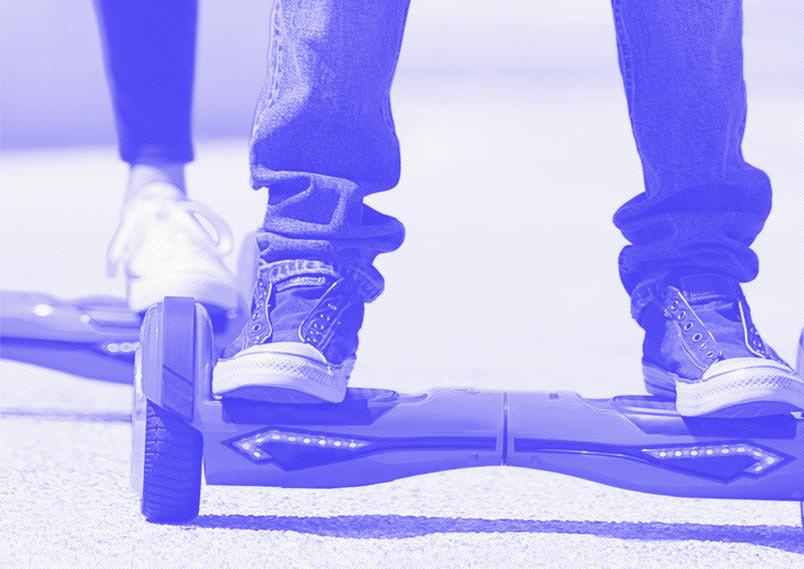
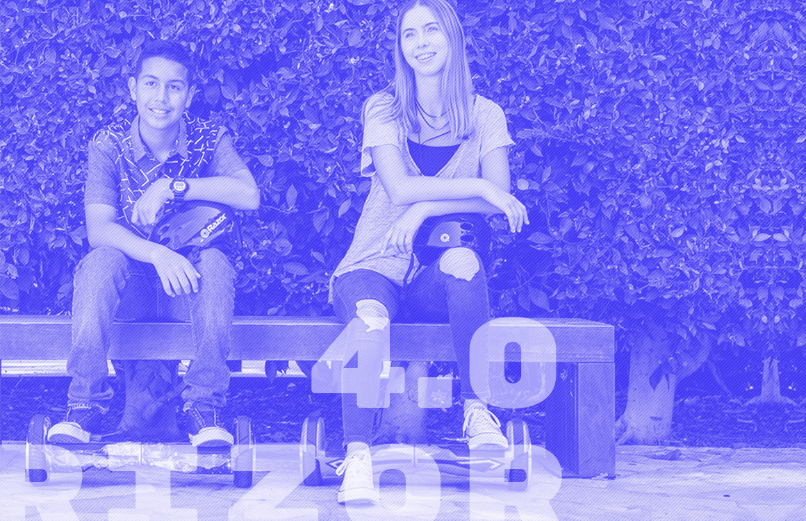

RIzor
Hovertrax
4.0
Маневренность, легкость,
экологичность
Преимущества
Дизайн
Внешний вид скутера дышит
идеями футуризма:
- плавные линии
- подсветка светодиодными
индикаторами - рельефные бамперы,
оснащенные защитными
панелями

Преимущества
Дизайн
Внешний вид скутера дышит
идеями футуризма:
- плавные линии
- подсветка светодиодными
индикаторами - рельефные бамперы,
оснащенные защитными
панелями
Цвет
Модель представлена сразу
в нескольких цветах.



© All rights reserved, 2017